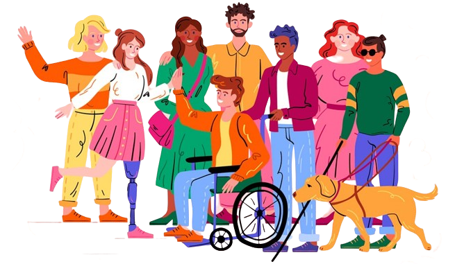

Deficiência

O que é uma deficiência?
A deficiência é uma condição complexa que afeta indivíduos em diferentes aspectos de suas vidas. Não se limita apenas à incapacidade física, mas engloba uma variedade de desafios que podem se manifestar de forma física, sensorial, cognitiva ou emocional. É importante compreender que a deficiência não define uma pessoa, mas é apenas uma parte da sua identidade.
Tipos de deficiência:
1. Deficiência Física:
Refere-se a limitações físicas que afetam a mobilidade ou a funcionalidade do corpo. Exemplos incluem paralisia cerebral, amputações, distrofia muscular, entre outros.2. Deficiência Sensorial:
Engloba perdas ou limitações nos sentidos, como deficiência visual (cegueira total ou parcial) e deficiência auditiva (surdez total ou parcial).3. Deficiência Cognitiva:
Envolve dificuldades de aprendizado e processamento de informações, como a síndrome de Down, o autismo e a dislexia.4. Deficiência Mental/Intelectual:
Refere-se a limitações no funcionamento intelectual e adaptativo, afetando a capacidade de compreensão e de realização de tarefas diárias.5. Deficiência Emocional/Psicológica::
Pode incluir condições como depressão, transtorno bipolar, ansiedade severa, entre outras, que afetam o bem-estar emocional e psicológico da pessoa.Dificuldades Associadas:
Acessibilidade:
A falta de acessibilidade física, digital e comunicacional pode limitar a participação plena das pessoas com deficiência na sociedade.Estigma e Discriminação:
Ainda existe um estigma social associado à deficiência, o que pode resultar em discriminação, preconceito e exclusão.Barreiras Educacionais e Profissionais:
A falta de adaptações e suportes adequados nas instituições educacionais e no ambiente de trabalho pode dificultar o acesso à educação e ao emprego para pessoas com deficiência.Limitações de Mobilidade e Autonomia:
A dependência de dispositivos de assistência e a falta de infraestrutura acessível podem restringir a mobilidade e a autonomia das pessoas com deficiência.Desafios na Saúde Mental:
As pessoas com deficiência podem enfrentar desafios adicionais em relação à saúde mental devido a fatores como isolamento social, estresse crônico e dificuldades de adaptação.Conclusão
É fundamental promover uma cultura de inclusão e respeito, reconhecendo as habilidades e potenciais das pessoas com deficiência. A criação de ambientes acessíveis, o desenvolvimento de políticas inclusivas e o combate ao preconceito são passos essenciais para garantir a igualdade de oportunidades e o pleno exercício dos direitos das pessoas com deficiência em todas as esferas da sociedade.